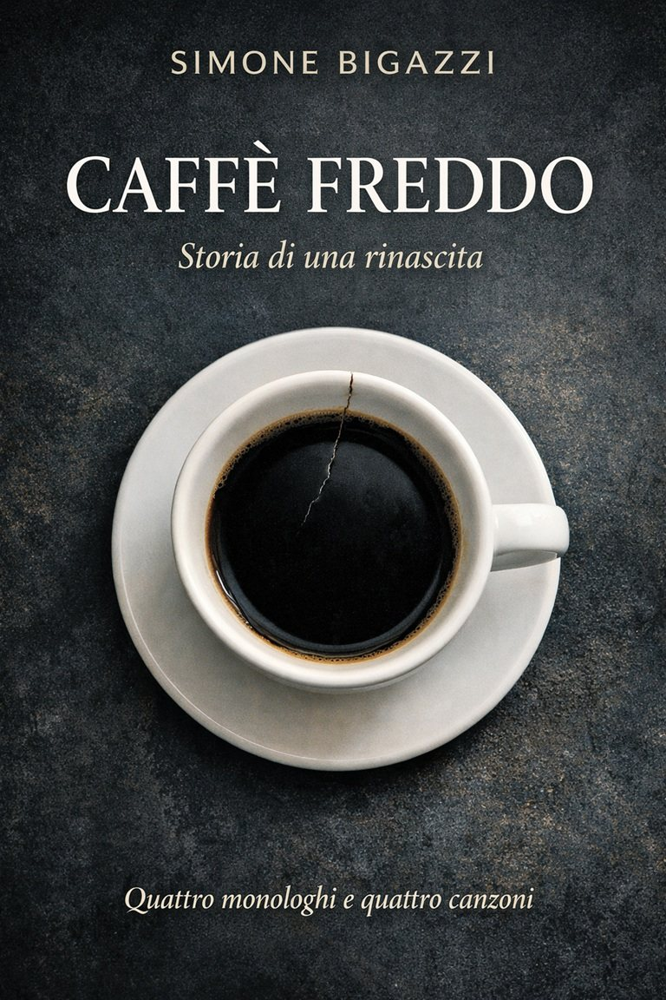

Caffè Freddo
Storia di una rinascita
Quattro monologhi e quattro canzoni
IniziaLeggi dal prologo →Viola ha vent’anni,
un flauto che profuma di sogni
e un cuore che batte troppo forte
per chi non la vede davvero.
Basta una tazzina di caffè per farla inciampare nell’amore e basta un amore sbagliato per farle perdere lentamente se stessa: la voce, la musica, e quasi senza accorgersene, anche lo sguardo.
Questa è la storia di come si può cadere.
E di come, a volte, ci si rialza.
Nota di lettura
Questo libro è composto da quattro monologhi narrativi e quattro canzoni.
Le parti musicali non sono un semplice accompagnamento, ma fanno parte integrante della storia.
Al termine di ogni monologo trovi un player per ascoltare la canzone corrispondente.
La lettura può avvenire in due modi:
seguendo il solo racconto, oppure alternando la narrazione all’ascolto delle canzoni.
Entrambe le modalità sono valide: l’ascolto non è necessario, ma arricchisce l’esperienza emotiva.
L’ordine dei monologhi e delle canzoni è parte del percorso narrativo.